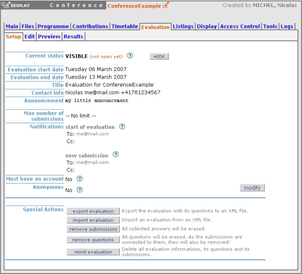
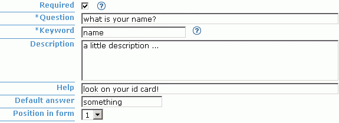
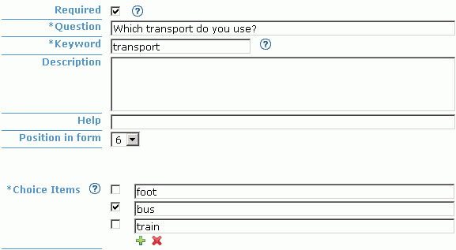
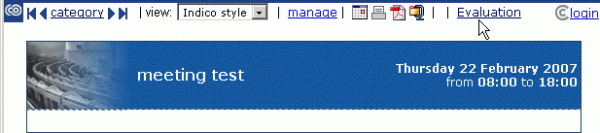

| Prev | Chapter 8. Event evaluation | Next |
The evaluation module is a special feature and is by default deactivated at the beginning.
So first of all if you plan to use it, activate this feature
by clicking on  .
Now you can see a new tab called Evaluation on the top of the frame.
.
Now you can see a new tab called Evaluation on the top of the frame.

In this section you can set main information and configuration about the survey. Click on to set your options.

Curent status:
When an evaluation is HIDDEN (default), it is not shown in the Display Area and guests cannot answer it.
On the other hand, it is shown if set to VISIBLE.
But be aware if you want your survey to be well running that it must be open and contain some questions.
To show / hide it, simply click on
/  .
.
Notifications: You can set email addresses of people you want to be notified when the evaluation starts and/or when someone answers the form. Advice: In the modification panel, check Add current registrants if you want your event participants to be notified of the starting evaluation.
Must have an account: If an account is needed, visitors must first login before accessing the form.
Anonymous: When anonymous, logged submitters send their form anonymously. Otherwise their identity is known by the surveyor. Note: Users not logged in can always send their form anonymously. If you really need to know the identity of all your submitters, you have to check Must have an account.
Special Actions:
Export the evaluation with its questions to an XML file. Useful for backing up or transporting. Note: If the file is directly shown in Firefox/InternetExplorer6, save it with: File > Save as... To solve the same problem in InternetExplorer7: Page > Save as...
 Import an evaluation from an XML file.
Import an evaluation from an XML file.
 Concerning main setup configuration (all main information, e.g. title, announcement, ...)
you can choose to keep your current one or to overwrite it with imported one.
For the questions, you can keep only your current ones or only imported ones
or have both (imported ones just after current ones).
Advice:
We suggest you to back up your current evaluation (with export feature)
before importing in order to prevent losses of data.
Notes:
In order to prevent some misunderstanding the status and the dates are not imported.
Be aware that as questions and submissions are bound,
you will also lose your current submissions if you get rid of your questions.
Concerning main setup configuration (all main information, e.g. title, announcement, ...)
you can choose to keep your current one or to overwrite it with imported one.
For the questions, you can keep only your current ones or only imported ones
or have both (imported ones just after current ones).
Advice:
We suggest you to back up your current evaluation (with export feature)
before importing in order to prevent losses of data.
Notes:
In order to prevent some misunderstanding the status and the dates are not imported.
Be aware that as questions and submissions are bound,
you will also lose your current submissions if you get rid of your questions.
All collected answers will be erased.
 All questions will be erased.
As the submissions are connected to them, they will also be removed!
All questions will be erased.
As the submissions are connected to them, they will also be removed!
 Delete all evaluation informations, its questions and its submissions.
You will have a brand new evaluation.
Delete all evaluation informations, its questions and its submissions.
You will have a brand new evaluation.
In this section you can add/edit/remove the questions of your form. On the left panel you have 6 different types of question you can add.
 Textbox:
A standard field where your submitter can enter some text as answer is provided with the question.
Here is a little example of a question of type Textbox.
Textbox:
A standard field where your submitter can enter some text as answer is provided with the question.
Here is a little example of a question of type Textbox.

Textarea: Like Textbox but with more capacity for text. Suited for long answers like comments, feedbacks, etc.

Password: Like Textbox but the answer is hidden. For example on the picture below, it is recommanded that the answer is hidden if the submitter is in a public area. Otherwise anybody next to him would be able to read the password on the screen. Note that the evaluation module doesn't use https, as all this information is not supposed to be confidential.

 Select:
A drop down list which lets the submitter to select one answer.
Select:
A drop down list which lets the submitter to select one answer.
 Radio:
A group of radio buttons which lets the submitter to select one answer.
Radio:
A group of radio buttons which lets the submitter to select one answer.

Checkbox: This type is suited for multiple choices questions. You can check many answers.

When adding a Textbox/Textarea/Password you have the above screen.Required: If checked, an answer for this question is mandatory.
Question: Enter your question.
Keyword: A keyword is the summary of the question in one word. (e.g. "What is your name?" -> "name") It's useful when exporting the statistics into a CSV file. Instead of writing the full question, we just write the keyword so that it takes less place.
Description: Enter a description (facultative).
Help: Enter a help message (facultative).
Default answer: The answer of the question will already be filled with this given default answer (facultative).
Position in form: The position of the question within the form.
On the following picture you can see the result of the manipulation.


When adding a Select/Radio/Checkbox you have the above screen. Note that some fields have already been described above, that's why they are not explained here.• Choice Items: Choice items are selectionable answers. Note: Check the box next to an choice item, to set it to be a default answer.
On the following picture you can see the result of the manipulation.


 .
Press to edit a question
and
.
Press to edit a question
and  to remove it.
to remove it.
In Preview you can see how your evaluation really looks like in the display area. Feel free to play with this form, submitted information won't be recorded.
In this section we have the statistics. There are two panels called Options and Statistics.
In the first one you can select which submissions you want to see, remove some of them and export all the results into a CSV file.
To import a CSV file into Microsoft Office Excel: Data > Import External Data > Import Data... > select your CSV file > Next > Uncheck Tab and check Comma > Next > Finish > OK.
In the second, you see the recolted results of your evaluation shown as graphs or as answers lists depending on the question type.
Answers lists shown for Textbox/Textarea/Password. (See Section 8.3.1.2)

Graphs shown for Select/Radio/Checkbox. (See Section 8.3.1.2)

For a conference, you can access an evaluation via the left menu.

